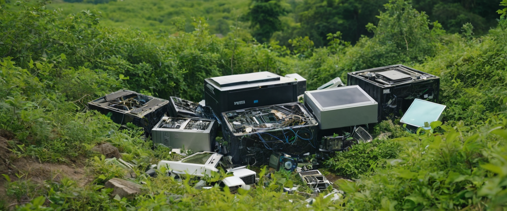

Investigating the Impact of Electronic Waste, Creating Sustainable Solutions
by Cayden Fielies, Hoërskool Gerrit Maritz, Computer Applications Technology.
Focus Area |
The impact of e-waste on the environment. |
Focus Question |
What are the environmental implications of e-waste, and which responsible disposal or recycling practices could be applied in South Africa? |
Abstract |
One of the waste streams with the greatest rate of growth in the world is electronic waste, or "e-waste", which poses serious threats to human health and the environment. The investigation looks at how e-waste affects the environment, specifically the harmful impact it has on the air, land, and water due to the emission of dangerous contaminants. Even though e-waste contains precious metals, recycling efforts are still restricted because of the high prices and difficulty of isolating dangerous elements. Novel techniques like as vacuum metallurgy and bioleaching have promising prospects for more environmentally friendly recycling. This study emphasises the need for enhanced recycling procedures, legislative changes, and more public knowledge in order to lessen the detrimental ecological effects of e-waste pollution, especially on ecosystems and animals. |
Focus Area
The impact of e-waste on the environment.
Focus Question
What are the environmental implications of e-waste, and which responsible disposal or recycling practices could be applied in South Africa?
Abstract
One of the waste streams with the greatest rate of growth in the world is electronic waste, or "e-waste," which poses serious threats to human health and the environment. The investigation looks at how e-waste affects the environment, specifically the harmful impact it has on the air, land, and water due to the emission of dangerous contaminants. Even though e-waste contains precious metals, recycling efforts are still restricted because of the high prices and difficulty of isolating dangerous elements. Novel techniques like as vacuum metallurgy and bioleaching have promising prospects for more environmentally friendly recycling. This study emphasises the need for enhanced recycling procedures, legislative changes, and more public knowledge in order to lessen the detrimental ecological effects of e-waste pollution, especially on ecosystems and animals.
Continue